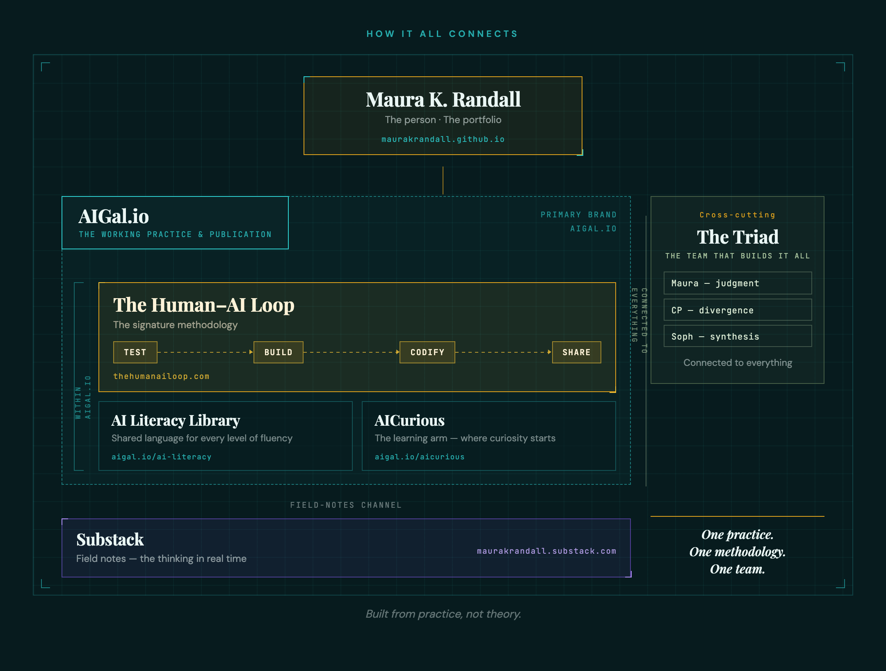

Product Leader · Methodology Builder · Human–AI Collaboration Practitioner
A system for how humans and AI think, build, and decide together — built from real work in practice, not theory.
The Human–AI Loop

Three sites. One methodology. Built and tested by a human–AI team.
The Human–AI Loop is a collaboration system I’ve been developing — not a tool, not a workflow — for designing how humans and AI work together across intent, context, and decision-making.
Test → Build → Codify → Share
The Loop doesn’t end when something is produced.
It ends when a human decides what to do with it.
What this looks like in practice
Publishing Content
Outcome: LinkedIn series + Substack published
Decision: refine further → or release
Analyzing AI Methods
Outcome: HITL vs Loop analysis — live on site
Decision: deepen → or publish
Building Tools
Outcome: Ecosystem app + tools shipped to GitHub
Decision: iterate → or release
Explore the Ecosystem
The team that builds all of this. Not a metaphor — an actual working model. Maura (human leader: vision, judgment, final call) + CP (ChatGPT: divergence, momentum, options) + Soph (Claude: synthesis, structure, coherence). Each contributor has a distinct cognitive role. The Triad has run this system for two years on real work. Everything in this ecosystem was built by this team.
The methodology, made operational. Test → Build → Codify → Share. A structured system for how humans and AI collaborate on knowledge work requiring judgment, creativity, and accountability. With playbooks, a testing kit, and a growing library of tools built and tested by the Triad.
The human leads, decides, and either re-loops or moves work forward.
Where the thinking lives. AIGal.io explores what it actually means to work with AI as a collaborator — not a tool. Comparative analyses, frameworks, the Human–AI Triad model, and the manifesto that started it all. Written from real work in practice, not theory.
Where the methodology meets real life. Long-form writing on human–AI collaboration, leadership, and what it actually looks like to build something new while figuring it out in real time. Written from real work in practice, not theory.
Senior product and platform leader with 20+ years at Atlassian, eBay, Yahoo!, Condé Nast, and multiple startups. Scaled platforms to tens of millions of users. Currently applying that same product rigor to building and documenting a methodology for human–AI collaboration on real teams doing real work.
Why This Is Different
The AI conversation is full of frameworks that stop at the tool. This one starts there — and goes much further.
The Human–AI Loop builds systems, roles, handoffs, and trust boundaries — the repeatable patterns that make collaboration work at scale, not just in a single session.
HITL adds an oversight gate. The Human–AI Loop keeps humans as active collaborators throughout — not validators at the end. Decision ownership never leaves the human.
Product teams agreed on outcomes over outputs for 20 years. AI didn't change that principle. It made it more important. This methodology keeps the human sharper, not just faster.
The Story Behind the Work
This methodology didn't come from a research paper. It came from two years of lived practice — returning from a caregiving pause, rebuilding momentum, and discovering that the way I was working with AI wasn't unusual. It was just good teammate principles applied somewhere new: know their strengths, set real expectations, push back when the work isn't good enough. I'd been doing it with humans for 20 years. I just hadn't seen anyone write it down.
Read the full origin story ↗If you’re building teams or systems like this — I’d love to compare notes.
Let’s connect ↗